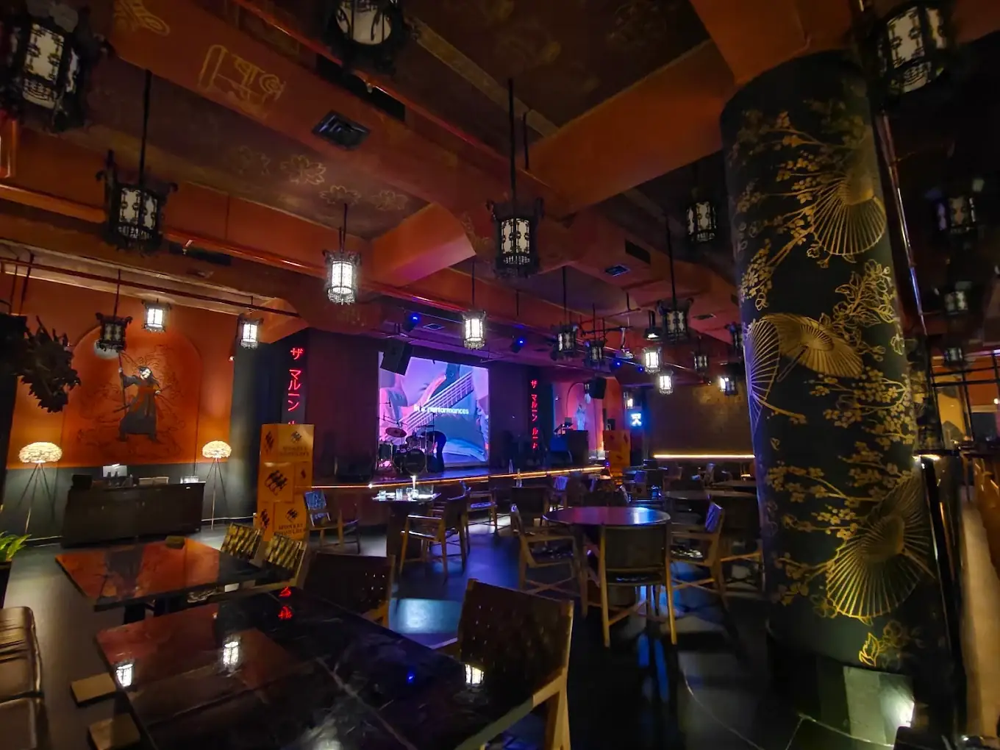
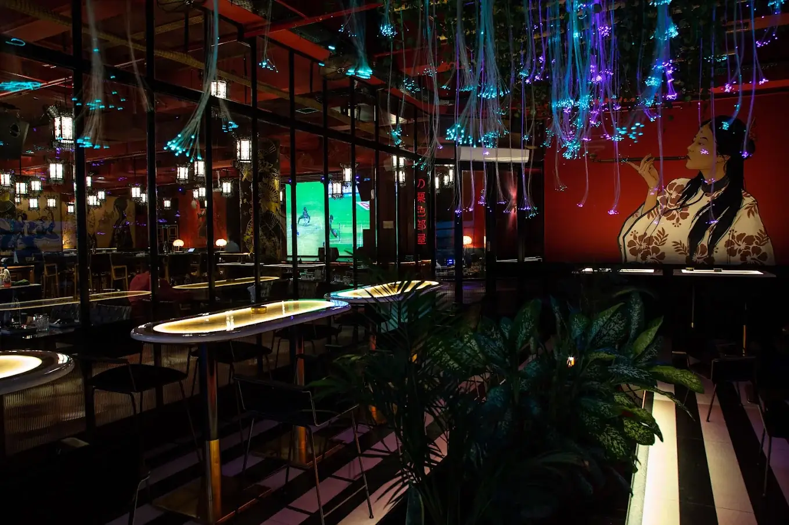
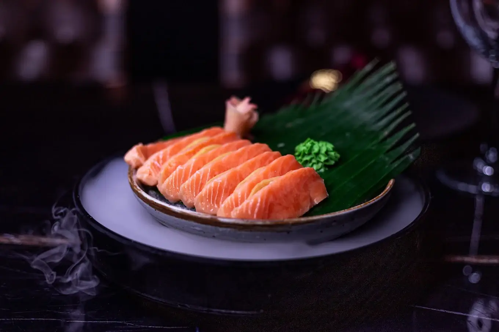
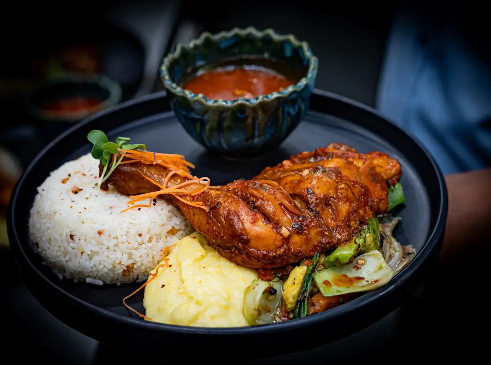
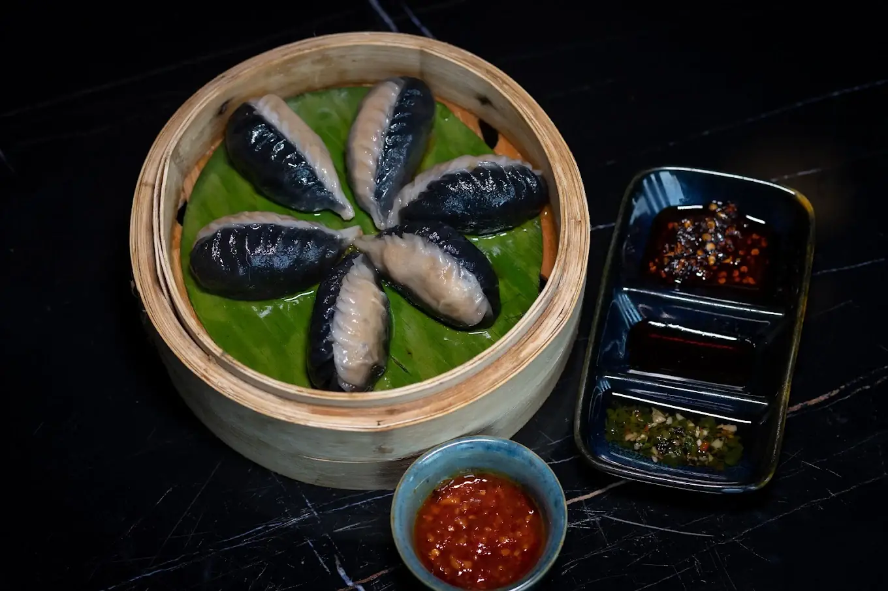
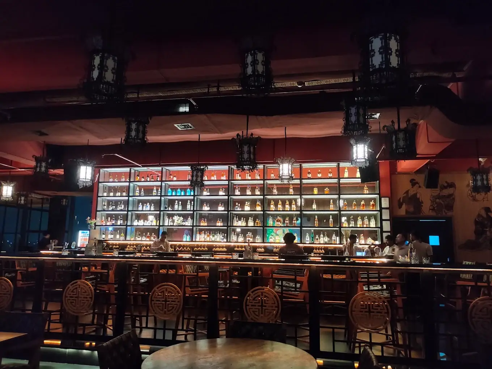

JOURNAL
Stories from the room.
Guides, festivals, guest chefs and the music behind the nights.

GUIDE
A first-timer's guide to The Maroon Room
What to order and when to come: cocktails, dim sum, sushi, imported salmon, pork belly, hot pot, karaoke Fridays and weekend bands.
READ ON THE BLOG
MUSIC
Guns N' Roses in Guwahati
Essential albums, where to stay and eat, and how to plan concert day on 17 November.
READ ON THE BLOG
FESTIVAL
Coastal Festival
Chilli crab, lobster and coastal cocktails: a seafood celebration.
READ ON THE BLOG
GUEST CHEF
Roots Reimagined with Pretty Brahma
Bodo culinary traditions through the lens of contemporary Pan-Asian dining.
READ ON THE BLOGWINE
An evening of discovery
A wine tasting guided by sommelier Apurva Aras, Head of Batches and Blends.
READ ON THE BLOG
GUEST CHEF
Fire in the Hills
A night with Chef Kalen H. Zhimomi celebrating Nagaland's new wave of talent.
READ ON THE BLOG
NIGHTLIFE
Nightlife in Guwahati
Where the crowd goes late, and why karaoke Fridays fill up fast.
READ ON THE BLOG